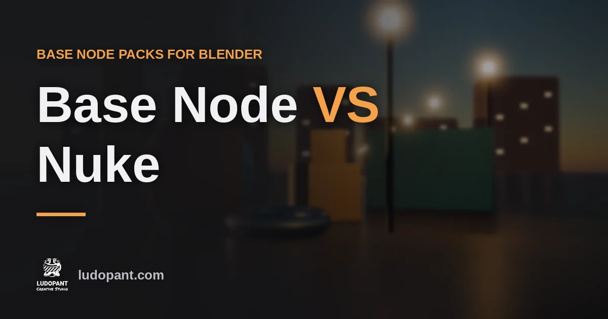
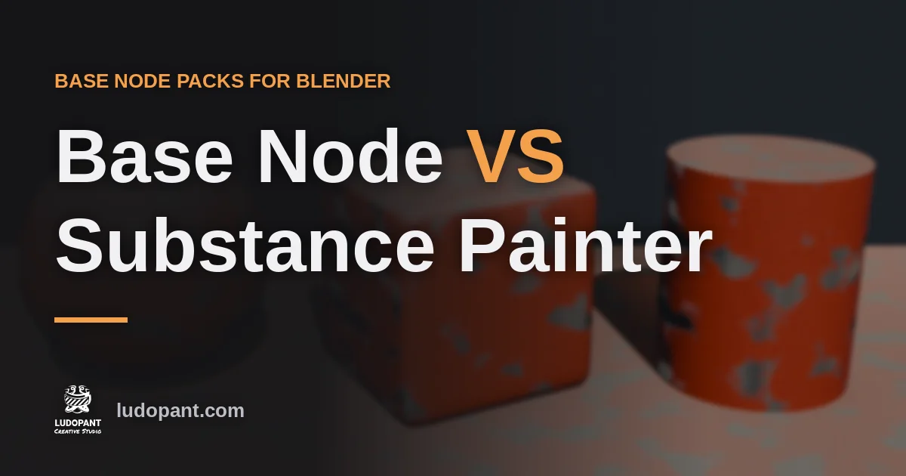
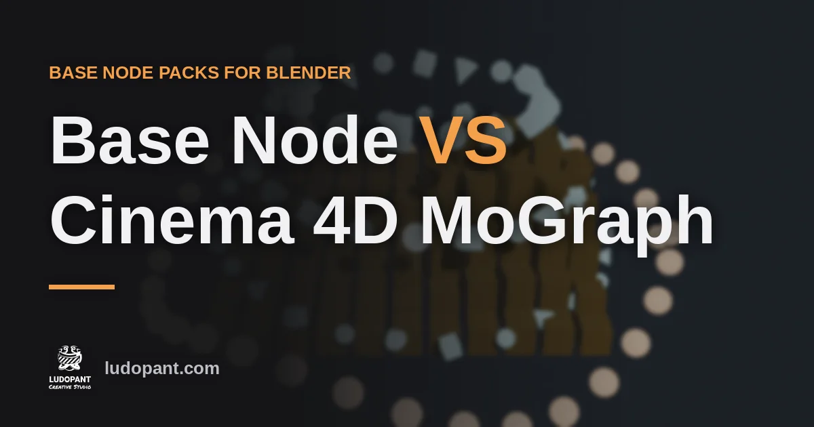
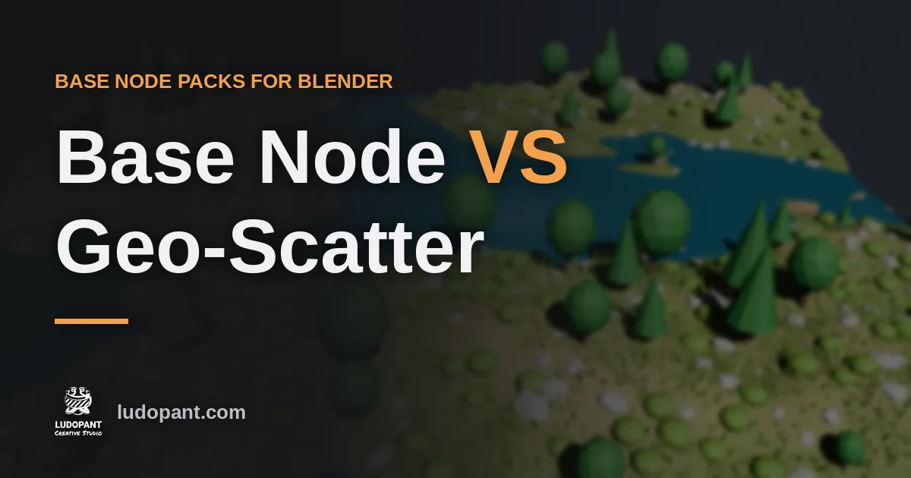

Products › Base Node Packs › VS
Base Node VS the commercial tools
Each pack of Base Node follows a commercial tool. These pages put them side by side: what the tool does, how Base Node does it inside Blender, and where the tool is ahead.

Base Node VS Nuke
Foundry · answered by Compositing Pro, Motion Compositing
7 covered, 5 partial, 2 not covered

Base Node VS Substance Designer
Adobe · answered by Texture Lab, Smart Materials
5 covered, 3 partial, 1 not covered

Base Node VS Substance Painter
Adobe · answered by Material Layers, Smart Materials
2 covered, 3 partial, 2 not covered

Base Node VS Cinema 4D MoGraph
Maxon · answered by Motion Graphics
2 covered, 3 partial, 1 not covered

Base Node VS After Effects
Adobe · answered by Motion Design 2D, Motion Compositing
5 covered, 1 partial, 1 not covered

Base Node VS Houdini
SideFX · answered by Procedural Toolkit, Game Art Tools, Modeling Tools
8 covered, 2 partial, 2 not covered

Base Node VS Geo-Scatter
BD3D Digital Design · answered by Scatter & Biomes
1 covered, 4 partial, 0 not covered

Base Node VS Illustrator
Adobe · answered by Ink & Engraving
5 covered, 2 partial, 1 not covered

Base Node VS Goo Engine
DillonGoo Studios · answered by Toon & Anime
2 covered, 0 partial, 1 not covered
Trademarks of their owners: Nuke, NukeX, Nuke Studio of Foundry; Adobe Substance 3D Designer of Adobe; Adobe Substance 3D Painter of Adobe; Cinema 4D (MoGraph) of Maxon; Adobe After Effects of Adobe; Houdini of SideFX; Geo-Scatter of BD3D Digital Design; Adobe Illustrator of Adobe; Goo Engine of DillonGoo Studios. Ludopant and Base Node are not affiliated with or endorsed by them.